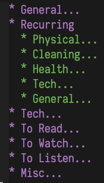
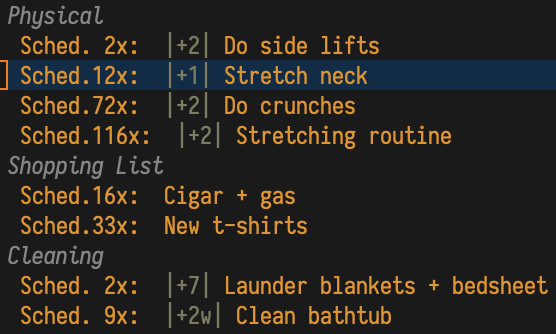
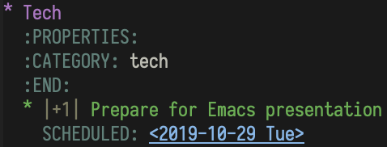
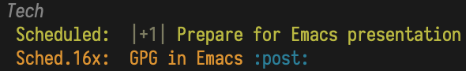
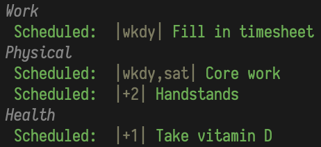
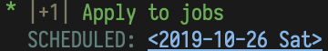
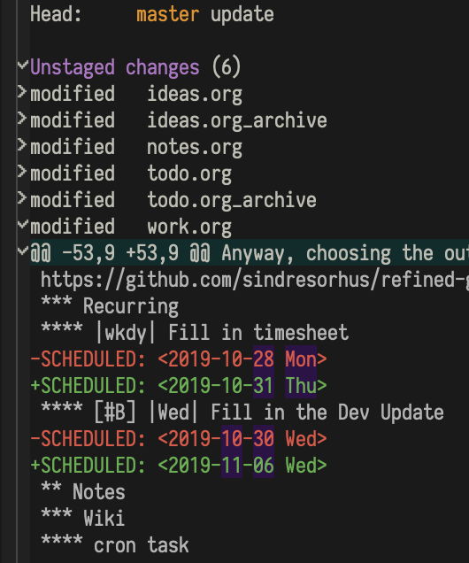
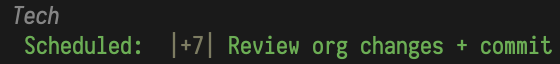

Managing Your Life With org-mode and Other Tools
Marcin Swieczkowski

Introduction
This will be a short talk about how I've been managing my time with org-mode.
I hope you find it useful for your personal and professional life.
org-mode is complicated

Features
- outline
- tables
- hyperlinks
- todo items
- tags and properties
- scheduling and deadlines
- capture, refile, archive
- agenda
- exporting
- literate programming
- … much more
org-mode is complicated
Philosophy common in Emacs and its ecosystem:
Steep learning curve with the hope of a big productivity payoff in the long term.
But, org-mode at its core can actually be pretty simple.
Advantages of simplicity
Spend less time getting up to speed.
Can use brainpower towards other ends.
Can be more flexible.
Minimize effort spent on bookkeeping.
(You can always add more bookkeeping if you find it necessary)
org-mode can be simple
Most people do not actually use all of org-mode's features.
But, how do you decide which features to use?
In this talk I go over the subset of org-mode that I use, and why I chose it.
My personal strategy

Organizing todo items
I keep my todo list entirely in a single todo.org file.
I don't use TODO items. If something is in my todo file, it's implicitly todo.
Subtrees in todo.org provide structure to your tasks.
Organizing todo items

Organizing todo items
I've converged on this strategy after some trial and error:
- I was forgetting to mark tasks TODO.
- I would have TODO items scattered around my various org files.
Scheduling and org-agenda
When I want to work on something, I schedule it so it shows up in my org-agenda.
I treat scheduled dates as "soft". For hard deadlines, I use… deadlines.
I always view the agenda for the current day or week, showing scheduled items and not TODO items.
Recurring tasks
I've been using this basic strategy to handle my tasks in a flexible manner, even tasks that recur.
When I finish recurring tasks, I just reschedule them.
I noticed that some tasks would always be rescheduled in the same manner, e.g. C-c C-s +1 <RET>. More on this later.
Some packages…
org-super-agenda

org-super-agenda
For simplicity's sake I try to avoid having too many packages.
But this one is really useful.
It allows you to categorize all of your tasks.
Similar tasks can be visually grouped together.
Categorizing
You can categorize by:
- urgency/priority
- type of task (e.g. chore/shopping/exercise/etc)
- school/work/personal
- time of day (e.g. morning/afternoon/evening)
- and more!
Setting up org-super-agenda
(use-package org-super-agenda
:after org-agenda
:config
(org-super-agenda-mode)
Setting up org-super-agenda
(setq
org-super-agenda-groups
'((:name "Today"
:time-grid t
:todo "TODAY")
(:name "High Priority"
:priority "A"
:order 1)
(:name "Work"
:category "work"
:tag "work"
:order 2)
Setting up org-super-agenda
Setting up org-super-agenda
(:name "Shopping List"
:category "shopping"
:tag "shopping"
:order 3)
(:name "Cleaning"
:category "cleaning"
:tag "cleaning"
:order 4)
Setting up org-super-agenda
...
(:name "Tech"
:category "tech"
:tag "tech"
:order 180)
(:name "Waiting" :todo "WAITING" :order 190)
(:name "Low priority"
:priority "C"
:order 200))))
Categorizing in org-mode
Tags: Quickest way to categorize a task.
Categories: Keep your todo list structured.
Categorizing in org-mode

Categorizing in org-mode

org-recur

org-recur
Emacs package I authored.
For a long time I found it hard to deal with recurring tasks, and was manually rescheduling them every day.
org-recur helps me:
- specify how often I want to do a task, and
- reschedule it automatically when I complete it
How it works
- I was previously calling
org-scheduleon an entry with the same date delta, like+2, every time to reschedule it. - Now, I put the recurrence delta in the task's heading instead, like:
|+2|. - Next time I'm done with the task, I call
org-recur-finishto reschedule it.
How it works

Pressing C-c d…
How it works
org-recurprovides a face for the recurrence delta, visually separating it from the heading content.org-recuralso provides some additional syntax not supported byorg-schedulesuch aswkdy.- You can also configure
org-recur-finishto mark non-recurring entries asDONEand archive them.
Some ideas…
|+1| Go through goals(Daily)|+1| Work on org-mode presentation|+1w| Backup files to external hard drive :tech:(Weekly)|+1m| Review financials :chore:(Monthly)
Some ideas…
|wkdy| Fill in timesheet :work:(Every weekday)|sat,sun| 30 minutes on personal project(Every Sat and Sun)|wkdy,sat| Do ab exercises|5| Pay bills :chore:(5th of every month)
Recommended settings
org-recur configuration:
https://github.com/m-cat/org-recur#recommended-configuration
org-agenda configuration:
https://github.com/m-cat/org-recur#recommended-org-mode-settings
Recommended keybindings
- Complete a task:
"C-c d"in org-mode /"d"in org-agenda - Schedule to today:
"C-c 0"/"0" - Schedule to tomorrow:
"C-c 1"/"1"
If you're a mouse user, you can complete tasks with e.g. "<mouse-3>"!
Alternatives
Already included in org-mode are:
- Repeated tasks
- org-habit
- sexp diary entries
I find these to be too complex, but they may be more suitable for you.
Using git

Using git
I track almost everything in git (using magit, of course).
I don't necessarily push everything I track, just keep a local history of changes.
git and org-mode
git can help you catch unintentional deletions and modifications.
It helps you keep track of recently-made changes and review them periodically.
E.g. I stored this presentation in a git repo, staging changes periodically.
git and org-mode
I review and commit my org files at least once a week.

This recurring task in my org-agenda makes sure I don't forget.
Sometimes I find a change I made by accident, and revert it. Phew! Thanks, git.
Is that it?
My usage of org-mode is so simple that I was wondering why I even signed up to talk about it.
It works really well for me because I don't have to think about it at all. It fits into my life seamlessly.
The way you use org-mode will no doubt be different than mine. You'll converge on a best practice for yourself over time, as I have done.
Bonus: Misc tools
Bonus: Misc tools
For most people, technology enables procrastination.
Let's use technology to fight it, instead.
These projects that help me do that.
(Won't go into these in detail.)
Warning
These are non-free software projects.
I realized this after writing the slides, so these were not presented.
Beorg
For editing my org-mode files on mobile when I'm out and about. Highly recommended.
There is also the open source project "organice". Haven't used it.
Beeminder
Stake money on meeting your goals.
A "self-binding device" that increases your chances of obtaining a goal by a factor of 3.
They have a great blog on goal-forming, psychology, and success stories.
Examples
BM is currently motivating me to:
- Read more books
- Reduce my amount of org-agenda tasks
- Reduce my amount of open browser tabs
- Work on this presentation every day
Post by mbork, an Emacs user:
Streaks
Let's say you have a goal: do X for Y days.
Streaks lets you keep track of… streaks.
Streaks
You can do the same with org-habit:
https://orgmode.org/manual/Tracking-your-habits.html
However, I don't use TODO items.
DONE history can get very long.
Also, Streaks is nice and simple to use.
Cold Turkey
Block specific apps/sites on a schedule.
Can keep distractions blocked during work hours, or always.
Intentionally difficult to disable.
My review:
https://www.bytedude.com/ending-internet-addiction-a-review-of-cold-turkey/
Questions? Comments?
My details:
scatman@bu.edu / github.com/m-cat / bytedude.com
My init file:
Photo credits
In order:
Workshop& on Unsplash
Ben White on Unsplash
Maksym Kaharlytskyi on Unsplash